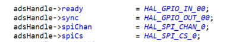

Energy Metrology SW Overview¶
The Energy Measurement software is divided three layers. The MSPM0 DriverLib layer consists of all the peripherals defined and is configured using SysConfig. The module layer contains four modules, Hardware Abstraction Layer (HAL) module, Analog front end converter (ADS131M0x) module, Metrology module, Communication module (DLT645). The HAL module provides Application Programming Interfaces (APIs) to manipulate and configure MCU pins and peripherals. The Analog front end module provides Application Programming Interfaces (APIs) related to configuration of ADS131M0x and SPI communication. The metrology module provides the APIs to process the sampled data and do the mathematical calculations. The communication module is used to receive commands from GUI and send the computation results to GUI. The application module the place where the user will specify the required configuration of each module and start the measurement process.
HAL Module¶
Overview¶
The HAL module consists of microcontroller-specific code that provides generic APIs to control and configure the user-defined pins and peripherals. The HAL APIs are developed to allow changing the HAL module used without requiring any code changes to other modules.
The HAL is purposely meant to only abstract the key pins and peripherals needed to run the energy measurement. A user is free to expand the HAL’s API to use other pins, peripherals and features of the microcontroller but its strongly recommended not to modify existing APIs to ensure ease migration to new versions of this library.
No application specific code or ADS specific code should exist in the HAL layer or in its API. Instead, it treats the pins and peripherals in a generic manner. For example, an ADS131M0x likely has a RESET/SYNC pin but the HAL layer will only provide APIs to control the state of a GPIO output pin. It’s the responsibility of the ADS131M0x module to associate the specific HAL GPIO output pin to the ADS’s RESET/SYNC pin.
Enums¶
The HAL layer uses enums to determine the generic references to different peripherals. Each peripheral has separate enums that are associated with pins used in that peripheral. This allows the user to change the peripheral pins without changing the code in other modules that utilizes its API. For example, the SYNC/RESET pin in the ADS module is associated with one enum in a GPIO peripheral. The user can change the pin associated with the GPIO enum without any code changes in ADS module. Consider an enum HAL_GPIO_OUT in which total number of enums represent the maximum number of GPIOs used as outputs.
Figure 2 - enum representing GPIO output pins
Figure 2 shows an example of an enum that represents 4 different GPIO output pins. The purpose of this enum is to provide a way for the HAL and ADS APIs to reference GPIO outputs in a generic manner. The number of GPIOs determined here are based on the application requirement and the user is free to add or delete the number of GPIOs based on their application. The user will need to keep in mind the maximum amount of GPIO output pins required by different ADS devices supported in their software.
Figure 3 - Enum to MCU pin mapping
Figure 3 shows a snippet from the MSPM0G3507 HAL which shows how the HAL_GPIO_OUT_02 enum is now associated with a specific GPIO on the MSPM0G3507. GEN_GPIO_OUT_XXXX defines are from TI SysConfig, which will be discussed later. Note that each of those defines are representing values needed by the MSPM0’s DriverLib API to manipulate the specific pin.
Figure 4 - HAL API example
Now that the HAL provides the information needed to associate an enum to a specific pin, HAL_writeGPIOPin() shows the API used to change the output value of a pin associated with a given HAL_GPIO_OUT enum. It is important to note that the enum value is translated to MSPM0’s DriverLib API calls by utilizing internal structures and arrays in the HAL.

Figure 5 - ADS131M0x to HAL mapping
Finally when the user wants to change the output value of the RESET/SYNC pin, the user can call the generic HAL API while providing the enum value that is associated with the RESET/SYNC pin to make the change. Although this example is focused on HAL_GPIO_OUT enum, the concept is the same for every other pin/peripheral the HAL has created enums for, such as PWM, ADC inputs, GPIO inputs and SPI enums.
TI SysConfig¶
MSPM0 software utilizes a GUI tool called TI SysConfig to simplify configuration of pins and peripherals. Almost all MSPM0 SDK examples utilize SysConfig. For more information on how SysConfig works and how to use it, see TI SysConfig. It is important to note that the HAL modules provided by the SDK use SysConfig which is why you will not see DriverLib API calls to initialize peripherals and pins. Instead, the HAL uses defines created by SysConfig to map the specific pins and peripherals to the different generic HAL enums. Figure 3 shows how the GEN_GPIO_OUT_XXXX defines created by SysConfig are then mapped to the HAL structures and enum value.
ADS/AMC Module¶
The Energy Metrology Software utilizes a high performance ADC to sense the Mains voltage and current at sample rates up to 8 kHz. When the ADC produces new samples, it interrupts the MCU to request a data access through serial peripheral interface (SPI). When the host MCU receives the data ready (DRDY) interrupt, it issues a read of a new set of samples via SPI. These samples are aggregated with past samples to calculate metrology parameters.
This module separates the ADS/AMC configuration from the main code. These files provide ADS/AMC register definitions, APIs to initialize ADS/AMC, read and write to registers, APIs to communicate through SPI and DMA, structure to store the converted value of ADC. The ADS_instance structure holds all the pins and variables that stores data related to particular ADS/AMC. When using multiple ADS/AMCs, it is easy to create duplicate ADS/AMC. This module uses APIs from HAL module to configure the pins and MCU peripherals.
Metrology Module¶
The metrology module is developed to process the sampled data and compute various metrology parameters for energy measurement. These parameters are collected by the calibration GUI for display. The key parameters calculated during energy measurements are:
Total and per phase active (kWh), reactive (kvarh), apparent energy (kVAh)
Total and per phase active (kW), reactive (kvar), apparent power (kVA)
Total and per phase fundamental active energy
Total and per phase fundamental active power
Total and per phase power factor
Per phase voltage and current root mean square (RMS)
Line frequency
Supply voltage dips/sags, swells, interruptions, under and over deviation
Per Phase Voltage THD
Per Phase Current THD
Voltage phase to phase angle
Per phase zero crossing
Communication Module¶
This module is used to communicate with GUI or any other controller over any communication module. In this example we are communicating to GUI over UART. This module uses the APIs from Metrology module to read the metrology parameters and APIs from HAL module to communicate over UART.
Application Module¶
This module allows the user to define and implement specific requirements. User needs to assign the correct MCU pins the application is using, specify the required parameters to compute.
API Guide¶
Known Issues¶
Supported Devices¶
TIDA-010243¶
Documents